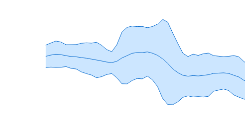

d3fc-technical-indicator View on GitHub View on unpkg
Components for calculating technical indicators on data series.
API Reference
- Bollinger Bands
- Elder-Ray
- Envelope
- Moving Average
- Exponential Moving Average
- Force Index
- MACD
- Relative Strength Index
- Stochastic Oscillator
Technical indicator calculators operate on an ordered input array of data, transforming it into a new array containing the indicator output values. The length of the output array is the same as the input array.
Calculators expose a value accessor property (or a number of accessors if required) used to extract values from the source array.
For calculators that only depend on a single value for their input, the value accessor defaults to the identity function.
Technical indicator parameters can be configured individually for each calculator instance. A default value is used if a parameter is not configured.
If an indicator calculator needs to create undefined values in the output (for example, the leading values of a moving average result), they will have the same structure as the other output objects, but will have primitive undefined property values.
Input values retrieved by the value accessor for which value == null is true will produce undefined values in the output.
Undefined inputs are best avoided — a single undefined input value will produce undefined output for all output values that depend on it.
import { indicatorBollingerBands } from d3fc-technical-indicator;
const bollinger = indicatorBollingerBands()
.period(3);
bollinger([5, 6, 7, 6, 5, 4]);
// [
// { upper: undefined, average: undefined, lower: undefined },
// { upper: undefined, average: undefined, lower: undefined },
// { upper: 8, average: 6, lower: 4 },
// { upper: 7.4880338717125845, average: 6.333333333333333, lower: 5.178632794954082 },
// { upper: 8, average: 6, lower: 4 },
// { upper: 7, average: 5, lower: 3 }
// ]
Bollinger Bands

# fc.indicatorBollingerBands()
Constructs a new Bollinger band calculator with the default settings.
# indicatorBollingerBands(data)
Computes the Bollinger bands for the given data array. Returns an array of objects with attributes:
upper: Upper Bollinger bandaverage: Simple moving averagelower: Lower Bollinger band
# indicatorBollingerBands.value([value])
Get/set the accessor function used to obtain the value to be used by the calculator from the supplied array of data. The accessor function is invoked exactly once per datum. Defaults to the identity function.
# indicatorBollingerBands.period([size])
Get/set the period of the moving average and standard deviation calculations performed by the calculator. Can be specified as a number, or as a function of the supplied array of data. Defaults to 10.
# indicatorBollingerBands.multiplier([multiplier])
Get/set the multiplier of the of the standard deviation around the moving average for the upper and lower bands. Defaults to 2.
Elder-Ray

# fc.indicatorElderRay()
Constructs a new Elder-ray calculator with the default settings.
# indicatorElderRay(data)
Computes the Elder-ray for the given data array. Returns an array of objects with attributes:
bullPower: Data highValue - EMA of specified periodbearPower: Data lowValue - EMA of specified period
# indicatorElderRay.closeValue([value])
Get/set the accessor function used to obtain the close price value to be used by the calculator from the supplied array of data. The accessor function is invoked exactly once per datum. Defaults to (d) => d.close.
# indicatorElderRay.highValue([value])
Get/set the accessor function used to obtain the high price value to be used by the calculator from the supplied array of data. The accessor function is invoked exactly once per datum. Defaults to (d) => d.high.
# indicatorElderRay.lowValue([value])
Get/set the accessor function used to obtain the low price value to be used by the calculator from the supplied array of data. The accessor function is invoked exactly once per datum. Defaults to (d) => d.low.
# indicatorElderRay.period([period])
Get/set the period of the moving average calculation performed by the calculator. Can be specified as a number, or as a function of the supplied array of data. Defaults to 13.
Envelope

# fc.indicatorEnvelope()
Constructs a new envelope calculator with the default settings.
# indicatorEnvelope(data)
Computes the envelope for the given data array. Returns an array of objects with attributes:
upper: Upper levellower: Lower level
# indicatorEnvelope.value([value])
Get/set the accessor function used to obtain the value to be used by the calculator from the supplied array of data. The accessor function is invoked exactly once per datum. Defaults to the identity function.
# indicatorEnvelope.factor([factor])
Get/set the multiplier used to obtain the upper and lower levels from the datum values. Defaults to 2.
Moving Average
# fc.indicatorMovingAverage()
Constructs a new simple moving average calculator with the default settings.
# indicatorMovingAverage(data)
Computes the moving average for the given data array. Returns an array of simple moving average values.
# indicatorMovingAverage.value([value])
Get/set the accessor function used to obtain the value to be used by the calculator from the supplied array of data. The accessor function is invoked exactly once per datum. Defaults to the identity function.
# indicatorMovingAverage.period([size])
Get/set the period of the moving average calculation performed by the calculator. Can be specified as a number, or as a function of the supplied array of data. Defaults to 10.
Exponential Moving Average
# fc.indicatorExponentialMovingAverage()
Constructs a new exponential moving average calculator with the default settings.
# indicatorExponentialMovingAverage(data)
Computes the exponential moving average for the given data array. Returns an array of exponential moving average values.
# indicatorExponentialMovingAverage.value([value])
Get/set the accessor function used to obtain the value to be used by the calculator from the supplied array of data. The accessor function is invoked exactly once per datum. Defaults to the identity function.
# indicatorExponentialMovingAverage.period([size])
Get/set the period of the exponential moving average calculation performed by the calculator. Can be specified as a number, or as a function of the supplied array of data. Defaults to 9.
Force Index

# fc.indicatorForceIndex()
Constructs a new force index calculator with the default settings.
# indicatorForceIndex(data)
Computes the force index for the given data array. Returns an array of force index values.
# indicatorForceIndex.closeValue([value])
Get/set the accessor function used to obtain the close price value to be used by the calculator from the supplied array of data. The accessor function is invoked exactly once per datum. Defaults to (d) => d.close.
# indicatorForceIndex.volumeValue([value])
Get/set the accessor function used to obtain the trade volume value to be used by the calculator from the supplied array of data. The accessor function is invoked exactly once per datum. Defaults to (d) => d.volume.
# indicatorForceIndex.period([size])
Get/set the period of the exponential moving average calculation performed by the calculator. Can be specified as a number, or as a function of the supplied array of data. Defaults to 13.
MACD

# fc.indicatorMacd()
Constructs a new MACD calculator with the default settings.
# indicatorMacd(data)
Computes the MACD for the given data array. Returns an array of objects with attributes:
macdsignaldivergence
# indicatorMacd.value([value])
Get/set the accessor function used to obtain the value to be used by the calculator from the supplied array of data. The accessor function is invoked exactly once per datum. Defaults to the identity function.
# indicatorMacd.fastPeriod([period])
Get/set the period of the 'fast' exponential moving average calculation performed by the calculator. Can be specified as a number, or as a function of the supplied array of data. Defaults to 12.
# indicatorMacd.slowPeriod([period])
Get/set the period of the 'slow' exponential moving average calculation performed by the calculator. Can be specified as a number, or as a function of the supplied array of data. Defaults to 26.
# indicatorMacd.signalPeriod([period])
Get/set the period of the 'signal' exponential moving average calculation performed by the calculator. Can be specified as a number, or as a function of the supplied array of data. Defaults to 9.
Relative Strength Index

# fc.indicatorRelativeStrengthIndex()
Constructs a new RSI calculator with the default settings.
# indicatorRelativeStrengthIndex(data)
Computes the RSI for the given data array. Returns an array of RSI values.
# indicatorRelativeStrengthIndex.value([value])
Get/set the accessor function used to obtain the value to be used by the calculator from the supplied array of data. The accessor function is invoked exactly once per datum. Defaults to the identity function.
# indicatorRelativeStrengthIndex.period([size])
Get/set the period of the relative strength index calculation performed by the calculator. Can be specified as a number, or as a function of the supplied array of data. Defaults to 14.
Stochastic Oscillator

# fc.indicatorStochasticOscillator()
Constructs a new stochastic oscillator calculator with the default settings. Returns an array of objects with attributes:
k: The 'k' percentaged: The 'd' percentage
# indicatorStochasticOscillator(data)
Computes an array of stochastic oscillator values from the given input array.
# indicatorStochasticOscillator.closeValue([value])
Get/set the accessor function used to obtain the close price value to be used by the calculator from the supplied array of data. The accessor function is invoked exactly once per datum. Defaults to (d) => d.close.
# indicatorStochasticOscillator.highValue([value])
Get/set the accessor function used to obtain the high price value to be used by the calculator from the supplied array of data. The accessor function is invoked exactly once per datum. Defaults to (d) => d.high.
# indicatorStochasticOscillator.lowValue([value])
Get/set the accessor function used to obtain the low price value to be used by the calculator from the supplied array of data. The accessor function is invoked exactly once per datum. Defaults to (d) => d.low.
# indicatorStochasticOscillator.kPeriod([size])
Get/set the period of the '%K' calculation performed by the calculator. Can be specified as a number, or as a function of the supplied array of data. Defaults to 5.
# indicatorStochasticOscillator.dPeriod([size])
Get/set the period of the '%D' moving average calculation performed by the calculator. Can be specified as a number, or as a function of the supplied array of data. Defaults to 3.
Found a problem in this page? Submit a fix!